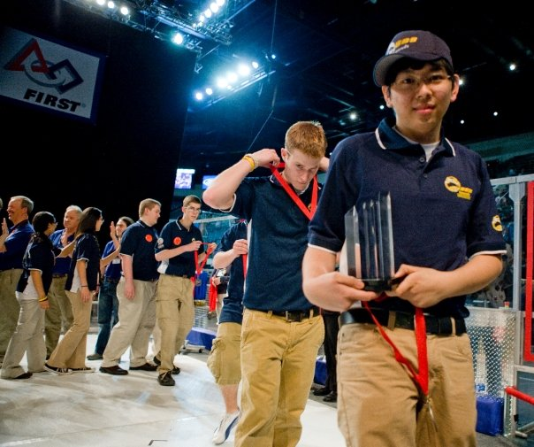

|
Team Awards
Here you can view our awards from the 2003, 2004, 2005, 2006, 2007, 2008, 2009, 2010, and 2011 seasons, as well as descriptions of each award.
| 
|
The TechHounds are happy to have received several awards throughout its existence as an FRC team, each commemorating a unique aspect of Team 868.
Click on an award under a season to go directly to its description.
|
2003
St. Louis Regional - Entrepreneurship Award
Atlanta Regional - GM Industrial Design Award
International Championship - GM Industrial Design Award
2004
International Championship - Galileo Division Champion, Runner-Up
International Championship - Delphi Golden Gear Award
2005
Boilermaker Regional - Entrepreneurship Award
Boilermaker Regional - Autodesk Visualization Award
Western Michigan Regional - Delphi Driving Tomorrow's Technology Award
International Championship - Autodesk Rising Star Visualization Award
Indiana Robotics Invitational - Championship Winner
2006
Pittsburgh Regional - Xerox Creativity Award
Pittsburgh Regional - Autodesk Visualization Award
Pittsburgh Regional - UL Safety FIRST Award
Boilermaker Regional - GM Industrial Design Award
Boilermaker Regional - Autodesk Visualization Award
International Championship - Xerox Creativity Award
2007
Boilermaker Regional - Xerox Creativity Award
2008
Boilermaker Regional - Autodesk Visualization Award
Boilermaker Regional - Woodie Flowers Award to Mr. Dave Smith
(see submission essay in Issue 1.2 of the newsletter)
Indiana Robotics Invitational - Best Lapper Award
2009
Buckeye Regional - Regional Finalist
Boilermaker Regional - Rockwell Automation Innovation in Control Award
Boilermaker Regional - Regional Winner
2010
Greater Kansas City Regional - Website Award
Greater Kansas City Regional - Rockwell Automation Innovation in Control Award
Boilermaker Regional - Xerox Creativity Award
Boilermaker Regional - Regional Winner
2011
Wisconsin Regional - Semifinalists
Boilermaker Regional - Delphi Engineering Excellence Award
Boilermaker Regional - Quarterfinalists
About the Awards
Autodesk Rising Star Visualization Award - This award is given to the best 30-second animation made by a rookie team. Alumnus Alex Broerman created the visualization that won at the Championship in 2005, which can be viewed at our Animation page.
Autodesk Visualization Award - Each year, the animation team creates a 30-second video in response to a particular prompt given by Autodesk. This award is given to the team who produces the best visualization, as decided by their peers at that specific event. Please check out all of our animations here.
Delphi Driving Tomorrow's Technology/Engineering Excellence Award - This award is given to a team 1) with a unique feature, part, design, programming strategy, etc., and 2) that can describe this feature in words in a concise and effective manner. We have earned this award based on our robot 'brain,' the removable electronics module of the 2005 robot. It housed all of the PWMs, spikes, controllers, and breakers which connected to the rest of the robot through a detachable array of plugs.
Delphi Golden Gear Award - In 2004, this award was given to the Delphi-sponsored team that finished with the highest seed at the Championship.
Entrepreneurship Award - This award is given to a team who displays skill and forethought in business practices.
Game Placement Awards (Finalist, Winner, etc.) - These awards are given based on the final outcome of the current year's game. We focus on a design strategy that will make us an effective alliance partner to be chosen by the highest seeded teams. During practice rounds, we focus on doing our best at our strategy and not necessarily on scoring points (depending on the game).
GM Industrial Design Award - This award is given to the robot that best achieves the game strategy or purpose. We earned this award both at the regional and national level during Stack Attack. Our robot was a party in the highest scoring match at any regional with 325 points, and holds the record for the tallest stack, with a stack of seven. We also won this award in 2006.
Rockwell Automation Innovation in Control Award - This award celebrates an innovative control system or application of control components to provide unique machine functions. We won this for our "boost" button that allowed our robot to use more power to push opposing robots away.
UL Safety FIRST Award - This award celebrates the team that progresses beyond safety fundamentals by using innovative ways to eliminate or protect against hazards. The winning team consistently demonstrates excellence in industrial safety performance that shines throughout the competition from uncrating to re-pack.
Website Award - This award recognizes excellence in student-designed, built, and managed FIRST team websites.
Woodie Flowers Award - This award celebrates effective communication in the art and science of engineering and design. Dr. William Murphy founded this prestigious award named after Dr. Woodie Flowers of MIT and notable FIRST figure in 1996 to recognize mentors who lead, inspire, and empower using excellent communication skills.
Xerox Creativity Award - This award celebrates creative design, use of a component, or a creative or unique strategy of play.
|
|